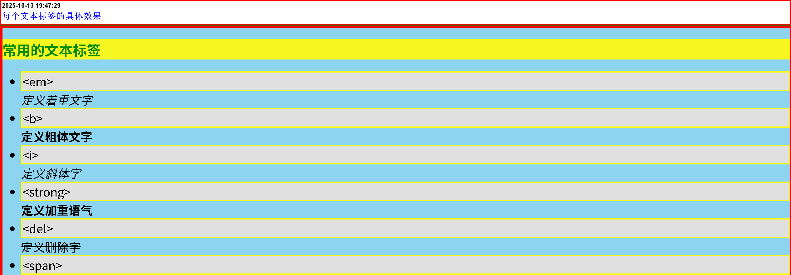
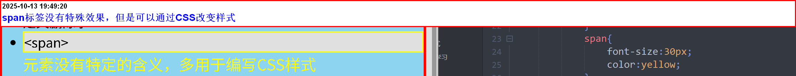
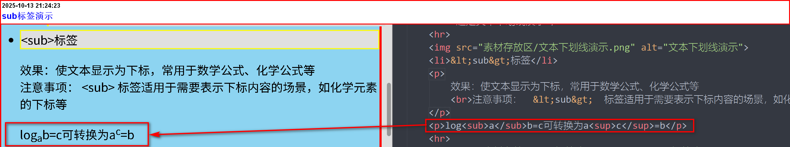
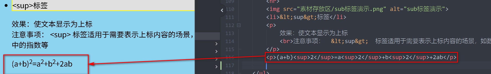
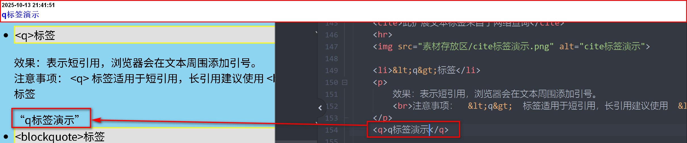
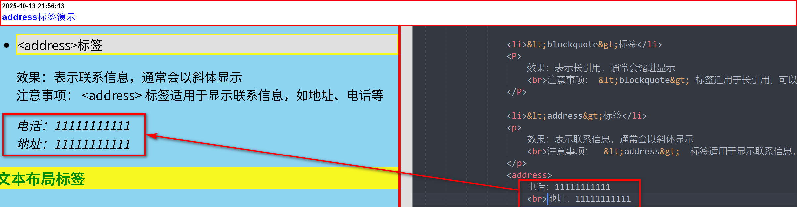
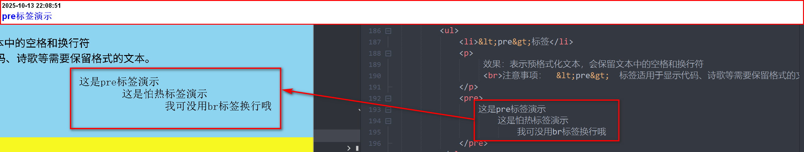

常用的文本标签
- <em> 定义着重文字
- <b> 定义粗体文字
- <i> 定义斜体字
- <strong> 定义加重语气
- <del>
- <span> 元素没有特定的含义，多用于编写CSS样式
<特别提示>
常用文本标签和段落是不同的，段落代表的是一段文本，而文本标签一般表示文本词汇，如单词，一个词语，一段句子……
每个标签的具体效果
span标签具体效果演示——本身没有特殊效果，但可以使用CSS改变样式
 但是注意：文本标签不只是span可以改变样式，像p\em\b\i\strong\del……都是可以的，但是强烈不建议用。总结
- <em> 和 <strong> ：用于语义化的强调和重要性标记
- <b>> 和 <i> ：用于视觉效果，没有语义上的强调
- <del> ：用于表示被删除的文本
文本标签扩展
文本格式化标签
除去：<b> <strong> <i> <em> <del>还有：
- <ins>标签
- <sub>标签
- <sup>标签
效果：使文本显示为下划线，表示文本是插入的内容
注意事项： <ins> 标签常用于显示内容更新、注释等场景。
效果：使文本显示为下标，常用于数学公式、化学公式等
注意事项： <sub> 标签适用于需要表示下标内容的场景，如化学元素的下标等
logab=c可转换为ac=b

效果：使文本显示为上标
注意事项： <sup> 标签适用于需要表示上标内容的场景，如数学公式中的指数等
(a+b)2=a2+b2+2ab
文本语义化标签
- <abbr>标签
- <cite>标签
- <q>标签
- <blockquote>标签
- <address>标签
表示缩写或缩略词，鼠标悬停时会显示完整的文本
注意事项：<abbr> 标签有助于提高文本的语义化，适用于缩写词的解释。
效果：表示引用的来源，通常显示为斜体
注意事项： <cite> 标签常用于引用书籍、文章、电影等的标题
效果：表示短引用，浏览器会在文本周围添加引号。
注意事项： <q> 标签适用于短引用，长引用建议使用 <blockquote> 标签
q标签演示
效果：表示长引用，通常会缩进显示
注意事项： <blockquote> 标签适用于长引用，可以通过CSS进一步调整样式
效果：表示联系信息，通常会以斜体显示
注意事项： <address> 标签适用于显示联系信息，如地址、电话等
地址：11111111111 
文本布局标签
除去：<p> <br> <hr> <span>还有：
- <pre>标签
效果：表示预格式化文本，会保留文本中的空格和换行符
注意事项： <pre> 标签适用于显示代码、诗歌等需要保留格式的文本。
这是pre标签演示 这是怕热标签演示 我可没用br标签换行哦
其他文本标签
- <mark>标签
- <s>标签
- <u>标签
效果：表示高亮显示的文本，通常显示为黄色背景
注意事项： <mark> 标签用于突出显示文本，适用于需要引起注意的内容。
效果：使文本显示为中划线，表示文本已被删除或不再适用。
注意事项： <s> 标签与 <del> 标签类似，但 <del> 标签更语义化，建议优先使用 <del> 标签。
你好该文本已被删除，不在显示很抱歉
效果：使文本显示为下划线，表示文本是插入的内容。 注意事项： <u> 标签与 <ins> 标签类似，但 <ins> 标签更语义化，建议优先使用 <ins> 标签。
这是一个插入文本——来自U标签😂